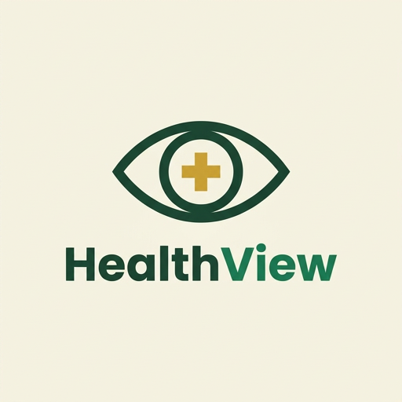

Convierte los registros de hospitalización en decisiones.
Reunimos los datos de hospitalización de Medellín y Antioquia en un solo lugar para que veas tendencias, enfermedades frecuentes, estancias y alertas sin armar reportes a mano.
Iniciar sesión Ver qué ofrecemosVista previa del panel
Ilustración con valores de ejemplo, salvo el total de registros.
Los datos existen, pero casi nadie los usa
Muchos hospitales guardan enormes cantidades de registros y no los aprovechan para:
- Detectar tendencias antes de que se vuelvan un problema.
- Anticipar la ocupación hospitalaria.
- Saber cuáles son las enfermedades más frecuentes.
- Medir cuánto dura cada hospitalización.
- Comparar resultados por hospitales, municipios y años.
Nuestra respuesta
Centralizamos la información y la presentamos de forma clara, visual y accesible, para que investigadores, analistas y personal médico consulten lo que necesitan sin depender de hojas de cálculo.
Todo parte de datos reales: más de 833.000 hospitalizaciones depuradas entre 2019 y 2022.
Qué ofrecemos
Ocho herramientas pensadas para explorar, comparar y anticipar.
Panel inteligente
Hospitalizaciones, pacientes por edad y sexo, diagnósticos frecuentes, estancia promedio y tasas de egreso y mortalidad.
Análisis de tendencias
Comparación mensual y anual, enfermedades que más crecen y temporadas de mayor demanda.
Mapa epidemiológico
Hospitalizaciones por municipio o departamento, y comparación entre regiones.
Sistema de alertas
Avisos cuando una enfermedad sube de repente, la ocupación es alta o hay estancias muy largas.
Búsqueda y filtros avanzados
Filtra por diagnóstico, edad, sexo, EPS, prestador, municipio y fechas.
Reportes automáticos
Exportación a PDF y Excel, indicadores a medida y resúmenes ejecutivos.
Comparador de indicadores
Compara hospitales, municipios, aseguradoras y periodos de tiempo.
PredicciónInnovación
Estimación de hospitalizaciones futuras, ocupación y enfermedades más frecuentes con aprendizaje automático.
Para quién es
Cada persona entra con su cuenta y ve lo que su rol necesita.
Administrador
Gestiona usuarios y configuración de la plataforma.
Analista
Explora tendencias, aplica filtros y genera reportes.
Investigador
Consulta y compara datos epidemiológicos.
Médico
Revisa indicadores clínicos y alertas.
Datos reales, depurados con cuidado
Trabajamos con el registro público de prestación de servicios médicos en hospitalización, publicado en datos.gov.co. Antes de analizarlo eliminamos los registros duplicados.
Quiénes somos

Somos el Grupo Chill, estudiantes de la Universidad Libre. Esta plataforma es nuestro proyecto de la asignatura Programación Web: una forma de mostrar que los datos de salud pueden ser claros para quien debe tomar decisiones.
La plataforma es una herramienta de análisis: no reemplaza el criterio clínico ni sirve para diagnosticar pacientes.